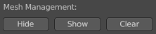

Mesh Management #
During the mesh generation, since each stroke will be converted to a separate mesh object, it is common to have many objects generated from the same Grease Pencil painting. This page will discuss the methods and options to handle multiple generated objects.
Multi-Object Alignment #
This section exists in each mesh generation operator's option panel, defining how multiple generated meshes are aligned in the depth dimension.
With the Stack option enabled, objects will be sorted according to the sequence of the input strokes. The objects generated from upward strokes will be moved forward along the depth axis, so that they will not be sheltered by the ones generated from downward strokes.
-
For planar meshes with normal maps, a constant gap in the depth axis can be set between each generated object.
-
For 3D meshes,
Overlap Tolerancedetermines the maximum portion of vertices which may be overlapped by downward objects.O%means no overlapping is allowed, just as the planar mesh case.100%means allowing all overlapping which leads to no depth movement at all.
Batch Operations #

In the sidebar panel, there are buttons to perform batch operations on all generated meshes of the active Grease Pencil object. The user can hide, show or delete all mesh objects at once.
Animation #
Multiframe operations may also generate multiple mesh objects, since the strokes in each different frame are regarded independent. To avoid the objects from different keyframes interfering with each other, the Stop-Motion Animation option can attach a predefined Geometry Nodes group to the generated object, which automatically hides the object outside its keyframe range.